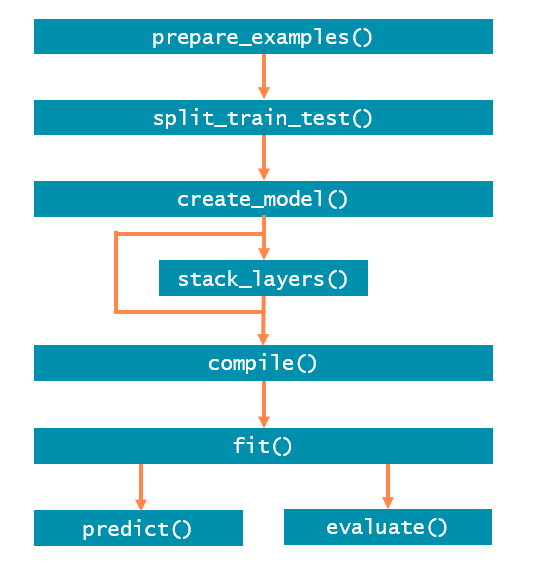

Introduction to processpredictR: a basic workflow
library(processpredictR)
library(bupaR)
library(ggplot2)
library(dplyr)
library(keras)
library(purrr)Introduction
The goal of processpredictR is to perform prediction
tasks on processes using event logs and Transformer models. The 5
process monitoring tasks are defined as follows:
- outcome: predict the case outcome, which can be the last activity, or a manually defined variable
- next activity: predict the next activity instance
- remaining trace: predict the sequence of all next activity instances
- next time: predict the start time of the next activity instance
- remaining time: predict the remaining time till the end of the case
The overall approach using processpredictR is shown in
the Figure below. prepare_examples() transforms logs into a
dataset that can be used for training and prediction, which is
thereafter split into train and test set. Subsequently a model is made,
compiled and fit. Finally, the model can be used to predict and can be
evaluated

Different levels of customization are offered. Using
create_model(), a standard off-the-shelf model can be
created for each of the supported tasks, including standard
features.
A first customization is to include additional features, such as case
or event attributes. These can be configured in the
prepare_examples() step, and they will be processed
automatically (normalized for numerical features, or hot-encoded for
categorical features).
A further way to customize your model, is to only generate the input
layer of the model with create_model(), and define the
remainder of the model yourself by adding keras layers
using the provided stack_layers() function.
Going beyond that, you can also create the model entirely yourself
using keras, including the preprocessing of the data.
Auxiliary functions are provided to help you with, e.g., tokenizing
activity sequences.
In the remainder of this tutorial, each of the steps and possible avenues for customization will be described in more detail.
Preprocessing
As a first step in the process prediction workflow we use
prepare_examples() to obtain a dataset, where:
- each row/observation is a unique activity instance id
- the prefix(_list) column stores the sequence of activities already executed in the case
- necessary features and target variables are calculated and/or added
The returned object is of class ppred_examples_df, which
inherits from tbl_df.
In this tutorial we will use the traffic_fines event log
from eventdataR. Note that both eventlog and
activitylog objects, as defined by bupaR are
supported.
df <- prepare_examples(traffic_fines, task = "outcome")
df
#> # A tibble: 27,001 × 11
#> ith_case case_id prefix prefi…¹ outcome k activ…² resou…³
#> <int> <chr> <chr> <list> <fct> <dbl> <chr> <fct>
#> 1 1 A2127 Create Fine <chr> Payment 0 Create… 537
#> 2 1 A2127 Create Fine - Payment <chr> Payment 1 Payment <NA>
#> 3 2 A15 Create Fine <chr> Send f… 0 Create… 561
#> 4 2 A15 Create Fine - Send Fi… <chr> Send f… 1 Send F… <NA>
#> 5 2 A15 Create Fine - Send Fi… <chr> Send f… 2 Insert… <NA>
#> 6 2 A15 Create Fine - Send Fi… <chr> Send f… 3 Add pe… <NA>
#> 7 2 A15 Create Fine - Send Fi… <chr> Send f… 4 Send f… <NA>
#> 8 3 A1820 Create Fine <chr> Payment 0 Create… 563
#> 9 3 A1820 Create Fine - Payment <chr> Payment 1 Payment <NA>
#> 10 4 A1451 Create Fine <chr> Send f… 0 Create… 560
#> # … with 26,991 more rows, 3 more variables: start_time <dttm>,
#> # end_time <dttm>, remaining_trace_list <list>, and abbreviated variable
#> # names ¹prefix_list, ²activity, ³resourceWe split the transformed dataset df into train- and test
sets for later use in fit() and predict(),
respectively. The proportion of the train set is configured with the
split argument.
set.seed(123)
split <- df %>% split_train_test(split = 0.8)
split$train_df %>% head(5)
#> # A tibble: 5 × 11
#> ith_case case_id prefix prefi…¹ outcome k activ…² resou…³
#> <int> <chr> <chr> <list> <fct> <dbl> <chr> <fct>
#> 1 1 A2127 Create Fine <chr> Payment 0 Create… 537
#> 2 1 A2127 Create Fine - Payment <chr> Payment 1 Payment <NA>
#> 3 2 A15 Create Fine <chr> Send f… 0 Create… 561
#> 4 2 A15 Create Fine - Send Fine <chr> Send f… 1 Send F… <NA>
#> 5 2 A15 Create Fine - Send Fin… <chr> Send f… 2 Insert… <NA>
#> # … with 3 more variables: start_time <dttm>, end_time <dttm>,
#> # remaining_trace_list <list>, and abbreviated variable names ¹prefix_list,
#> # ²activity, ³resource
split$test_df %>% head(5)
#> # A tibble: 5 × 11
#> ith_case case_id prefix prefi…¹ outcome k activ…² resou…³
#> <int> <chr> <chr> <list> <fct> <dbl> <chr> <fct>
#> 1 6873 A23409 Create Fine <chr> Payment 0 Create… 557
#> 2 6873 A23409 Create Fine - Payment <chr> Payment 1 Payment <NA>
#> 3 6874 A23410 Create Fine <chr> Send f… 0 Create… 557
#> 4 6874 A23410 Create Fine - Send Fine <chr> Send f… 1 Send F… <NA>
#> 5 6874 A23410 Create Fine - Send Fin… <chr> Send f… 2 Insert… <NA>
#> # … with 3 more variables: start_time <dttm>, end_time <dttm>,
#> # remaining_trace_list <list>, and abbreviated variable names ¹prefix_list,
#> # ²activity, ³resourceIt’s important to note that the split is done at case level (a case is fully part of either the train data or either the test data). Furthermore, the split is done chronologically, meaning that the train set contains the split% first cases, and the test set contains the (1-split)% last cases.
Note that because the split is done at case level, the percentage of all examples in the train set can be slightly different, as cases differ with respect their length.
nrow(split$train_df) / nrow(df)
#> [1] 0.8032295
n_distinct(split$train_df$case_id) / n_distinct(df$case_id)
#> [1] 0.7999069Transformer model
The next step in the workflow is to build a model.
processpredictR provides a default set of functions that
are wrappers of generics provided by keras. For ease of
use, the preprocessing steps, such as tokenizing of sequences,
normalizing numerical features, etc. happen within the
create_model() function and are abstracted from the
user.
Define model
Based on the train set we define the default transformer model, using
create_model().
model <- split$train_df %>% create_model(name = "my_model")
# pass arguments as ... that are applicable to keras::keras_model()
model # is a list #> Model: "my_model"
#> ________________________________________________________________________________
#> Layer (type) Output Shape Param #
#> ================================================================================
#> input_1 (InputLayer) [(None, 9)] 0
#> token_and_position_embedding (Toke (None, 9, 36) 792
#> nAndPositionEmbedding)
#> transformer_block (TransformerBloc (None, 9, 36) 26056
#> k)
#> global_average_pooling1d (GlobalAv (None, 36) 0
#> eragePooling1D)
#> dropout_3 (Dropout) (None, 36) 0
#> dense_3 (Dense) (None, 64) 2368
#> dropout_2 (Dropout) (None, 64) 0
#> dense_2 (Dense) (None, 6) 390
#> ================================================================================
#> Total params: 29,606
#> Trainable params: 29,606
#> Non-trainable params: 0
#> ________________________________________________________________________________Some useful information and metrics are stored for a tracebility and an easy extraction if needed.
model %>% names() # objects from a returned list#> $names
#> [1] "model" "max_case_length" "number_features" "task"
#> [5] "num_outputs" "vocabulary"
Note that create_model() returns a list, in which the
actual keras model is stored under the element name model.
Thus, we can use functions from the keras-package as follows:
model$model$name # get the name of a model#> [1] "my_model"
model$model$non_trainable_variables # list of non-trainable parameters of a model#> list()The result of create_model() is assigned it’s own class
(ppred_model) for which the processpredictR
provides the methods compile(), fit(),
predict() and evaluate().
Compilation
The following step is to compile the model. By default, the loss function is the log-cosh or the categorical cross entropy, for regression tasks (next time and remaining time) and classification tasks, respectively. It is of course possible to override the defaults.
model %>% compile() # model compilation#> Compilation complete!Training
Training of the model is done with the fit() function.
During training, a visualization window will open in the Viewer-pane to
show the progress in terms of loss. Optionally, the result of
fit() can be assigned to an object to access the training
metrics specified in compile().
hist <- fit(object = model, train_data = split$train_df, epochs = 5)hist$params#> $verbose
#> [1] 1
#>
#> $epochs
#> [1] 5
#>
#> $steps
#> [1] 2227hist$metrics#> $loss
#> [1] 0.7875332 0.7410239 0.7388409 0.7385073 0.7363014
#>
#> $sparse_categorical_accuracy
#> [1] 0.6539739 0.6713067 0.6730579 0.6735967 0.6747193
#>
#> $val_loss
#> [1] 0.7307042 0.7261314 0.7407018 0.7326428 0.7317348
#>
#> $val_sparse_categorical_accuracy
#> [1] 0.6725934 0.6727730 0.6725934 0.6725934 0.6722342Make predictions
The method predict() can return 3 types of output, by
setting the argument output to “append”, “y_pred” or
“raw”.
Test dataset with appended predicted values (output = “append”):
# make predictions on the test set
predictions <- model %>% predict(test_data = split$test_df,
output = "append") # default
predictions %>% head(5)#> # A tibble: 5 × 13
#> ith_case case_id prefix prefix_…¹ outcome k activ…² resou…³
#> <int> <chr> <chr> <list> <fct> <dbl> <chr> <fct>
#> 1 8001 A24869 Create Fine <chr [1]> Payment 0 Create… 559
#> 2 8001 A24869 Create Fine - Payment <chr [2]> Payment 1 Payment <NA>
#> 3 8002 A24871 Create Fine <chr [1]> Payment 0 Create… 559
#> 4 8002 A24871 Create Fine - Payment <chr [2]> Payment 1 Payment <NA>
#> 5 8003 A24872 Create Fine <chr [1]> Send f… 0 Create… 559
#> # … with 5 more variables: start_time <dttm>, end_time <dttm>,
#> # remaining_trace_list <list>, y_pred <dbl>, pred_outcome <chr>, and
#> # abbreviated variable names ¹prefix_list, ²activity, ³resourceraw predicted values (output = “raw”)
#> Payment Send for Credit Collection Send Fine
#> [1,] 4.966056e-01 0.344094276 1.423686e-01
#> [2,] 9.984029e-01 0.001501600 8.890528e-05
#> [3,] 4.966056e-01 0.344094276 1.423686e-01
#> [4,] 9.984029e-01 0.001501600 8.890528e-05
#> [5,] 4.966056e-01 0.344094276 1.423686e-01
#> [6,] 1.556145e-01 0.518976271 2.884890e-01
#> [7,] 2.345311e-01 0.715000629 5.147375e-06
#> [8,] 2.627363e-01 0.726804197 5.480492e-06
#> [9,] 3.347774e-05 0.999961376 2.501280e-08
#> [10,] 4.966056e-01 0.344094276 1.423686e-01predicted values with postprocessing (output = “y_pred”)
#> [1] "Payment" "Payment"
#> [3] "Payment" "Payment"
#> [5] "Payment" "Send for Credit Collection"
#> [7] "Send for Credit Collection" "Send for Credit Collection"
#> [9] "Send for Credit Collection" "Payment"
#> [11] "Send for Credit Collection" "Payment"
#> [13] "Send for Credit Collection" "Payment"
#> [15] "Send for Credit Collection" "Send for Credit Collection"
#> [17] "Send for Credit Collection" "Send for Credit Collection"
#> [19] "Payment" "Send for Credit Collection"Visualize predictions
For the classification tasks outcome and next activity a
confusion_matrix() function is provided.
predictions %>% class#> [1] "ppred_predictions" "ppred_examples_df" "ppred_examples_df"
#> [4] "ppred_examples_df" "tbl_df" "tbl"
#> [7] "data.frame"# print confusion matrix
confusion_matrix(predictions)#>
#> Payment Send Appeal to Prefecture
#> Appeal to Judge 2 6
#> Notify Result Appeal to Offender 0 0
#> Payment 1903 7
#> Send Appeal to Prefecture 34 90
#> Send Fine 387 0
#> Send for Credit Collection 688 22
#>
#> Send for Credit Collection
#> Appeal to Judge 10
#> Notify Result Appeal to Offender 0
#> Payment 617
#> Send Appeal to Prefecture 89
#> Send Fine 387
#> Send for Credit Collection 2644Plot method for the confusion matrix (classification) or a scatter plot (regression).
# plot confusion matrix in a bupaR style
plot(predictions) +
theme(axis.text.x = element_text(angle = 90))knitr::include_graphics("images/confusion_matrix.PNG")Evaluate model
Returns loss and metrics specified in compile().
model %>% evaluate(split$test_df)#> loss sparse_categorical_accuracy
#> 0.7779053 0.6716526Copyright © 2023 bupaR - Hasselt University